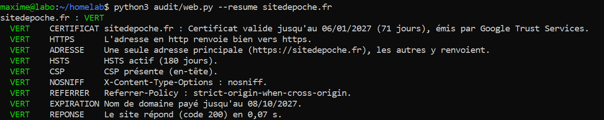
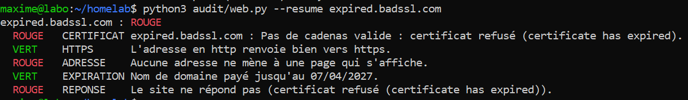
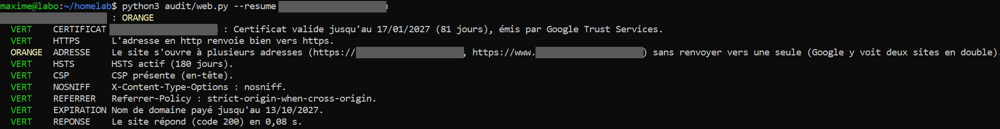
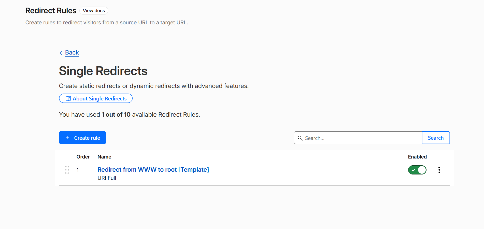
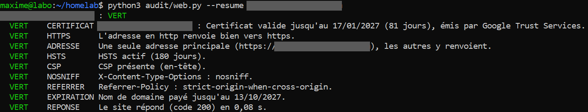
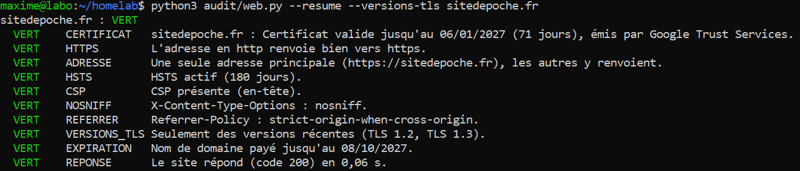
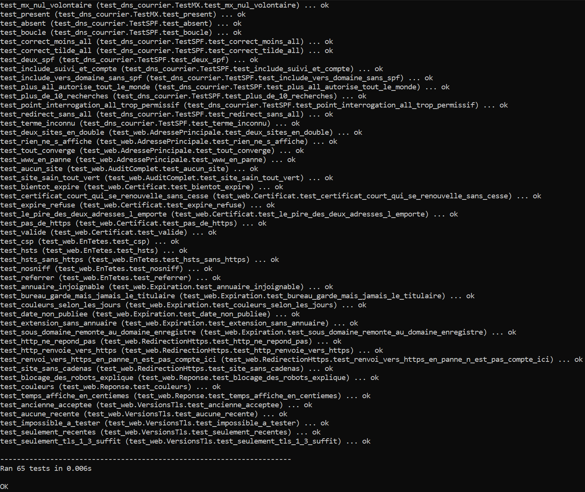

01Objectif
Compléter l'audit de l'étape 4 (DNS et courrier) par ce qu'un visiteur voit du site lui-même, avec le même principe : un script en ligne de commande, un résultat en JSON, des couleurs décidées par des règles écrites.
- HTTPS : certificat valide (le cadenas), date d'expiration, renvoi de http vers https, une seule adresse principale (avec ou sans www, mais l'autre doit y renvoyer) ;
- En-têtes de sécurité : HSTS, CSP, X-Content-Type-Options, Referrer-Policy ;
- Nom de domaine : date d'expiration, lue dans l'annuaire public RDAP ;
- Disponibilité : code de réponse et temps de réponse ;
- Versions de TLS acceptées : en option, pour mes clients seulement.
Cadre : le script ne lit que des informations publiques, comme un navigateur : ports 80 et 443 seulement, certificat, en-têtes, début de la page d'accueil. Pas de scan de ports, pas de recherche de failles. Il se présente honnêtement (User-Agent: Audit Site de Poche), sans se faire passer pour un navigateur. De l'annuaire RDAP, il ne garde que les dates et le nom du bureau d'enregistrement, jamais les coordonnées du titulaire.
02Schéma et technologies
python3 audit/web.py [--resume] [--versions-tls] exemple.fr
│
│ adresses qui existent dans le DNS : exemple.fr, www.exemple.fr
▼
┌──────────────────────────┐ http:// et https://, redirections suivies une à une ┌────────────────────┐
│ web.py ├──────────────────────────────────────────────────────►│ Le site │
│ certificat, redirections│◄──────────────────────────────────────────────────────┤ (ports 80 et 443) │
│ en-têtes, page d'accueil│ └────────────────────┘
│ │ liste officielle des annuaires ┌───────────────────────────────────────┐
│ expiration du domaine ├──────────────────────────────────►│ IANA (data.iana.org/rdap/dns.json) │
│ ├──────────────────────────────────►│ annuaire RDAP de l'extension (.fr…) │
└──────────┬───────────────┘ └───────────────────────────────────────┘
│ règles écrites → vert / orange / rouge / erreur
▼
JSON complet (par défaut) ou une ligne par vérification (--resume)| Rôle | Technologie |
|---|---|
| Langage | Python 3.12 (sur la tour), bibliothèque standard seulement : http.client, ssl, socket, urllib (rien à installer) |
| Réutilisation | Nettoyage de la saisie, format des résultats et affichage repris de l'étape 4 (dns_courrier.py) |
| Annuaire des noms de domaine | RDAP, l'annuaire public qui remplace WHOIS ; serveur de chaque extension trouvé dans la liste officielle de l'IANA |
| Tests | unittest, pages, certificats et fiches RDAP simulés (sans internet) |
| Code | audit/web.py, audit/test_web.py (dépôt Git privé) |
Utilisation :
cd ~/homelab
python3 audit/web.py exemple.fr # JSON complet
python3 audit/web.py --resume https://www.exemple.fr/ # une ligne par vérification, en couleur
python3 audit/web.py --resume --versions-tls client.fr # clients seulement
python3 -m unittest discover -s audit -v # les tests (étapes 4 et 5)03Les règles de couleur
| Vérification | Vert | Orange | Rouge |
|---|---|---|---|
| Certificat (avec et sans www) | Valide | Expire dans moins de 14 jours (ou d'un tiers de sa durée, pour les certificats très courts) | Refusé (expiré, mauvais nom…) ou pas de HTTPS |
| http → https | Renvoi vers https | L'adresse en http ne répond pas | Le site s'affiche sans cadenas |
| Adresse principale | Une seule, les autres y renvoient | Le site s'ouvre à deux adresses (doublon pour Google), ou l'une ne s'ouvre pas | Aucune page ne s'affiche |
| HSTS | 6 mois ou plus | Absent, trop court, mal écrit | — |
| CSP | En-tête, ou balise <meta> dans la page | Absente, ou en mode test (report-only) | — |
| X-Content-Type-Options | nosniff | Absent ou mal écrit | — |
| Referrer-Policy | Valeur prudente | Absent, ou valeur qui donne l'adresse complète aux autres sites (unsafe-url…) | — |
| Expiration du domaine | Plus de 45 jours | 45 jours ou moins, ou date non publiée | 15 jours ou moins, ou expiré |
| Réponse | Code 2xx en 3 s ou moins | Plus de 3 s | Erreur (4xx, 5xx) ou pas de réponse |
| Versions de TLS (option) | Seulement TLS 1.2 / 1.3 | Accepte encore TLS 1.0 ou 1.1 | Ni TLS 1.2 ni 1.3 |
Choix réfléchis :
- Une CSP qui manque est orange, jamais rouge : presque aucun site d'artisan n'en a, c'est bien moins grave qu'un cadenas qui manque.
- 45 jours pour le nom de domaine : un rapport mensuel prévient forcément au moins une fois avant l'expiration.
- Un temps de réponse mesuré depuis chez moi : c'est une indication, pas une mesure de ce que vit chaque visiteur.
- Certificats courts : certains certificats ne durent que quelques jours et se renouvellent sans cesse ; le seuil d'alerte suit leur durée pour ne pas crier au loup.
04Les versions de TLS : une limite assumée
Lire le certificat, c'est ce que fait n'importe quel visiteur. Tester les versions de TLS, c'est autre chose : le script se connecte plusieurs fois en forçant une version ancienne, pour voir si le serveur l'accepte. Ce n'est ni un scan ni une attaque, mais c'est tester la configuration du serveur, plus seulement la lire.
Décision : cette vérification n'est faite que pour mes clients, avec l'option --versions-tls, et jamais pour un prospect (un test automatique vérifie qu'elle n'est pas faite sans l'option). Techniquement, OpenSSL sur Ubuntu 24.04 refuse lui-même de proposer TLS 1.0 et 1.1 : le niveau de sécurité est abaissé seulement pour ces essais (@SECLEVEL=0), pas pour le reste de l'audit.
Pourquoi pas de scan de ports ni de recherche de failles : sur la machine de quelqu'un d'autre, sans autorisation écrite, c'est juridiquement risqué (articles 323-1 et 323-3-1 du Code pénal) ; le serveur appartient en général à l'hébergeur, pas au commerçant ; et un diagnostic fondé sur ce que voit n'importe quel visiteur est inattaquable devant un prospect.
05Tests réussis
| Test | Résultat attendu | Résultat obtenu | Preuve |
|---|---|---|---|
| Mon propre site (sitedepoche.fr) | Tout vert | Conforme | Fig. 1 |
| Site au certificat expiré exprès (expired.badssl.com) | Certificat rouge, renvoi http → https quand même reconnu | Conforme | Fig. 2 |
| Site de mon client traiteur, avant | Orange : le site s'ouvrait avec et sans www | Défaut trouvé | Fig. 3 |
| Correction dans Cloudflare | Règle de redirection www → adresse sans www (301) | Conforme | Fig. 4 |
| Site de mon client traiteur, après | Tout vert | Conforme | Fig. 5 |
| Versions de TLS sur mon site | Seulement TLS 1.2 et 1.3 : vert | Conforme | Fig. 6 |
| Versions de TLS sur un serveur qui n'accepte que TLS 1.0 (tls-v1-0.badssl.com) | Rouge | Conforme | — |
| Autres sites publics (afnic.fr, cloudflare.com, example.com) | Couleurs cohérentes (example.com rouge : il s'affiche aussi sans cadenas) | Conforme | — |
| 65 tests automatiques (étapes 4 et 5), sur la tour | Ran 65 tests … OK | Conforme | Fig. 7 |














06Problèmes rencontrés et solutions
| Problème | Cause | Solution |
|---|---|---|
| Le site de mon client s'ouvrait à deux adresses (avec et sans www) | L'adresse www était bien branchée sur le site, mais sans renvoi vers l'adresse principale (seule une balise « canonical » indiquait la bonne à Google) | Règle de redirection Cloudflare « www → adresse sans www » (301) ; vérifiée avec curl -sI, puis audit tout vert |
| Un site au certificat expiré était accusé de « ne pas répondre en http » | L'adresse http renvoyait bien vers https ; c'est la page https qui échouait | Un renvoi vers https compte comme réussi ; la panne est signalée par la vérification du certificat |
| Temps de réponse affiché « 0,0 s » | Arrondi au dixième | Affichage au centième (« 0,04 s ») |
| Seulement 30 tests sur la tour au lieu de 60 | Le travail n'avait pas encore été poussé sur GitHub, le git pull n'a rien ramené | Commit et push, puis git pull : 60 tests, puis 65 |
| La tour refusait de tenter TLS 1.0 / 1.1 | OpenSSL 3 sur Ubuntu 24.04 les bloque par défaut (niveau de sécurité 2) | Niveau abaissé seulement pour ce test, et seulement pour mes clients |
07Ce que j'en retiens
- L'outil sert déjà : dès le premier essai, il a trouvé un vrai oubli sur le site de mon premier client, que j'ai corrigé dans Cloudflare en quelques minutes.
- Savoir où s'arrêter : lire ce que voit un visiteur est sans risque ; tester la configuration d'un serveur demande un accord, et chercher des failles demande un contrat. J'ai réservé le test des versions de TLS à mes clients.
- Ne pas compter deux fois la même panne : une seule cause (le certificat) ne doit pas être reprochée sous plusieurs noms trompeurs.
- Rien à installer : la bibliothèque standard de Python suffit pour ce travail, donc moins de dépendances à maintenir sur la tour.